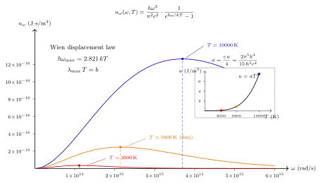

黑体辐射在统计力学里的完整推导
把你的手掌伸到一杯刚倒好的茶前面, 你能感到热. 茶并没有吹气过来, 也没有对流过来 (至少在手掌没贴上去之前), 热是通过真空传过来的 — 靠电磁场. 一杯 $T=350$ K 的茶, 表面每秒往每平方米空间里辐射出大约 $850$ W 的功, 而其中绝大部分落在红外波段. 更极端一点: 太阳表面 $T\approx 5800$ K, 它往外辐射 $\sigma T^4 \approx 6.4\times 10^7$ W/m². 这两个数字 — 以及连接它们的 $T^4$ 标度 — 都由同一个常数 $\sigma$ 决定, 而 $\sigma$ 又完全由 $h,\,k,\,c$ 推出来, 不包含任何材料信息. 这是相当惊人的一件事, 它意味着 "热的东西会发光" 这一我们每天都在经历的现象, 实际上是一个纯统计力学的恒等式. 本节把这个恒等式完整推一遍.
一、盒子里的电磁场等价于一群光子
在第 18 节我们讲了电子简并压. 现在把 fermion 换成 boson, 把质量 $m\gt 0$ 换成 $m=0$, 把化学势保持有限换成把化学势钉在零 — 我们就从 "电子气" 走到了 "光子气". 光子气就是热平衡下的电磁场, 把它分解到某个盒子的模式里, 每一个模式就是一个独立的简谐振子, 量子化之后每个激发量子就是一个 $\hbar\omega$ 的光子.
光子的三个关键属性决定了这一节的全部算法. 第一, 光子是玻色子, 故占据数可以任意大, 服从 Bose-Einstein 分布. 第二, 光子质量为零, 所以色散关系是严格线性的 $\omega = ck$, 没有任何 $\hbar^2k^2/2m$ 的能隙修正. 第三, 光子数目不守恒 — 一盏灯打开时房间里光子瞬间多出 $10^{20}$ 个, 没有任何守恒律阻止这件事. 数目不守恒意味着化学势不是独立的热力学变量, 而是由极小化自由能 $F(T,V,N)$ 对 $N$ 的条件 $\partial F/\partial N = \mu = 0$ 直接固定下来.
$\mu = 0$ 是这节一切推导的起点, 它把 Bose 分布里的 $e^{\beta(\hbar\omega-\mu)}$ 简化到 $e^{\beta\hbar\omega}$, 让所有积分能闭式地做出来. 没有这个简化, 我们得到的是 Bose 气体的通用框架, 做不出 $\pi^4/15$.
二、模式计数: 体积 $V$ 中有多少个电磁场模式?
把电磁场放进一个边长为 $L$ 的立方盒子, 取周期边界条件. 每个模式的波矢是 $\mathbf{k} = (2\pi/L)(n_x, n_y, n_z)$, 整数三元组. 在 $\mathbf{k}$ 空间里模式是格点, 密度是 $V/(2\pi)^3$, 其中 $V=L^3$. 在波数 $k$ 到 $k+dk$ 的球壳里, 模式数 $= (V/(2\pi)^3)\cdot 4\pi k^2\, dk$.
电磁场每个 $\mathbf{k}$ 有两个横向偏振 (纵向因为 $\nabla\cdot\mathbf{E}=0$ 在真空里被消掉了), 所以再乘 $2$. 于是
$$g(k)\,dk = \frac{V k^2}{\pi^2}\,dk \tag{1}$$
换成频率 $\omega = ck$, $dk = d\omega/c$, $k^2 = \omega^2/c^2$:
$$g(\omega)\,d\omega = \frac{V\,\omega^2}{\pi^2 c^3}\,d\omega$$
这个 $\omega^2$ 的模式密度是黑体谱形状的一半来源 (另一半来源是 Bose 分布). 为什么是 $\omega^2$ 而不是 $\omega^3$? 因为模式住在 3 维 $\mathbf{k}$ 空间里, 球壳是二维面, 带 $k^2$; 再乘 $dk/d\omega = 1/c$ 不改变幂次. 如果电磁场住在 $d$ 维空间里, 模式密度是 $\omega^{d-1}$, 黑体定律会变成 $u \propto T^{d+1}$ 而不是 $T^4$. 我们之所以看到 $T^4$, 根源在我们住在 3+1 维时空里.

三、从 Bose 分布到能量密度: 完整一条线推到 $u = aT^4$
每个模式是一个频率为 $\omega$ 的谐振子, 它的平均能量 (减掉零点能, 因为零点能在求 $u$ 的温度导数时会被消掉) 是
$$\langle\varepsilon\rangle_\omega = \frac{\hbar\omega}{e^{\beta\hbar\omega}-1}$$
这就是普通 Planck 因子. 把它和模式密度相乘, 对 $\omega$ 积分, 得到总能量
$$U = \int_0^\infty g(\omega)\,\langle\varepsilon\rangle_\omega\,d\omega = \frac{V}{\pi^2 c^3}\int_0^\infty \frac{\hbar\omega^3}{e^{\beta\hbar\omega}-1}\,d\omega$$
做代换 $x = \beta\hbar\omega$, 即 $\omega = x/(\beta\hbar)$, $d\omega = dx/(\beta\hbar)$:
$$\frac{U}{V} = \frac{\hbar}{\pi^2 c^3}\cdot\frac{1}{(\beta\hbar)^4}\int_0^\infty \frac{x^3}{e^x-1}\,dx = \frac{(kT)^4}{\pi^2 c^3 \hbar^3}\int_0^\infty \frac{x^3}{e^x-1}\,dx$$
剩下的积分是一个纯数. 用几何级数展开 $1/(e^x-1) = \sum_{n\ge 1} e^{-nx}$, 然后逐项积分:
$$\int_0^\infty \frac{x^3}{e^x-1}\,dx = \sum_{n=1}^\infty \int_0^\infty x^3 e^{-nx}\,dx = \sum_{n=1}^\infty \frac{6}{n^4} = 6\zeta(4) = 6\cdot\frac{\pi^4}{90} = \frac{\pi^4}{15}$$
这里用到了 Euler 的著名结果 $\zeta(4) = \pi^4/90$. 合起来
$$\frac{U}{V} = u(T) = \frac{\pi^2 (kT)^4}{15\, c^3\hbar^3} = aT^4, \qquad a = \frac{\pi^2 k^4}{15\, c^3\hbar^3} \tag{2}$$
把数字代进去: $k = 1.381\times 10^{-23}$ J/K, $\hbar = 1.055\times 10^{-34}$ J·s, $c = 2.998\times 10^{8}$ m/s. 算得 $a = 7.566\times 10^{-16}$ J/(m³·K⁴). 这就是辐射常数.
从能量密度 $u$ 到从物体表面单位面积辐射出去的功率 $j$, 还差一个几何因子. 一个各向同性的光子气, 表面朝外一侧的光子以各种角度往外飞, 把每个立体角元的贡献平均一下, 得到 $j = cu/4$. 因此
$$j = \sigma T^4, \qquad \sigma = \frac{c\, a}{4} = \frac{\pi^2 k^4}{60\, c^2\hbar^3} = \frac{2\pi^5 k^4}{15\, h^3 c^2}$$
末尾的形式 ($h = 2\pi\hbar$, $\hbar^3 = h^3/(2\pi)^3$, $1/60\cdot\pi^2/1 = \pi^2/60$, 和 $(2\pi)^3 = 8\pi^3$, 合起来给 $\pi^2/60\cdot 8\pi^3 = 2\pi^5/15$) 代数一下就出来. 代入数字: $\sigma = 5.670\times 10^{-8}$ W/(m²·K⁴).
四、Cliché 深挖: 为什么 $\sigma$ 完全由基本常数固定?
"Stefan-Boltzmann 常数是个普适常数" 这话大家张口就来, 但它值得被认真讲一遍: 一个本该和材料有关的物理量 — "一块热东西每秒辐射多少能量" — 为什么最终没有一个 "材料参数"?
答案要分三步看.
第一, 为什么可以和材料脱钩. 这里的 "黑体" 指的是一个完全不反射的腔 — 入射光全部吸收. 由 Kirchhoff 定律, 热平衡下任何物体的吸收率和发射率相等 ($\alpha_\omega = \varepsilon_\omega$). 黑体的吸收率恒为 $1$, 所以它的发射率也恒为 $1$ — 它发出的辐射只取决于内部电磁场的热平衡分布, 和原子结构、化学成分、晶格都无关. 因此 $u(T)$ 只能依赖于 $T$ 加上描述电磁场本身的物理常数.
第二, 为什么剩下的常数只有 $k,\,\hbar,\,c$ 三个. 光子的 Lagrangian 只含电磁场张量 $F_{\mu\nu}$ 和光速 $c$. 热平衡靠 $kT$ (热能和温度之间的换算) 引入. 量子化靠 $\hbar$ (把每个电磁模式打成离散谐振子阶梯) 引入. 没有别的可以进来 — 光子没有质量 (否则多一个 $m$), 光子没有自相互作用 (QED 在不加入带电粒子时就是自由理论), 也没有别的尺度. 因此 $u(T)$ 只能是 $k,\,\hbar,\,c,\,T$ 的函数.
第三, 量纲分析只能给到形状. 要把 $k,\,\hbar,\,c,\,T$ 凑成能量密度 (单位 J/m³). 能量 $kT$ 的量纲是 J. 长度 $\hbar c/(kT)$ 的量纲是米 — 这就是温度对应的光子热波长尺度. 所以能量密度量纲上只能是
$$u \sim \frac{kT}{(\hbar c/(kT))^3} = \frac{(kT)^4}{(\hbar c)^3}$$
形式上已经有 $T^4$ 了. 量纲分析到此为止 — 它没法告诉你前面的数值因子是 $1$ 还是 $\pi^2/15$ 还是 $42$.
第四, 那个数值因子是 $\pi^2/15$ 的来源. 这个数是两个独立的数学事实的乘积. 第一个是三维球面的面积因子 $4\pi/(2\pi)^3 = 1/(2\pi^2)$, 加上两个偏振, 最终在模式密度里出现 $1/\pi^2$. 第二个是黎曼 zeta 函数在 $4$ 处的值 $\zeta(4) = \pi^4/90$, 乘上伽马函数 $\Gamma(4) = 6$ 得到 $\pi^4/15$. 两者相乘给 $\pi^2/15$. 换句话说, $\sigma$ 里的 $\pi^5$ 一个来自 3 维空间球面 ($\pi^1$), 一个来自 $\zeta(4)\Gamma(4)$ ($\pi^4$). 两个数学的东西无缝贴到一起, 变成可测的物理常数. 用当前 CODATA 数字反复校验, 理论值 $\sigma_\mathrm{th} = 5.670374\times 10^{-8}$ W/(m²·K⁴) 和实验测量一致到八位有效数字.
这就是为什么 $\sigma$ 是基本常数: 它是 "在 3+1 维时空里, 自由电磁场达到热平衡时的比例常数", 没有任何其他自由度能溜进去.
五、两个极限与两个数字
有了 Planck 谱的单频密度
$$u_\omega(\omega, T) = \frac{\hbar\omega^3}{\pi^2 c^3}\cdot\frac{1}{e^{\beta\hbar\omega}-1}$$
我们来查两个极限. 当 $\hbar\omega \ll kT$ (低频, 或经典极限), $e^{\beta\hbar\omega}-1 \approx \beta\hbar\omega$, 于是
$$u_\omega \approx \frac{\omega^2}{\pi^2 c^3}\cdot kT$$
这就是 Rayleigh-Jeans 公式: 每个模式分到 $kT$ (能量均分), 乘模式密度. 对 $\omega$ 从 $0$ 积到 $\infty$ 会发散 — 这就是 "紫外灾难". 1900 年之前这个积分怎么都不收敛, 直到 Planck 猜对 $\hbar\omega$ 的阶梯形式才解决.
当 $\hbar\omega \gg kT$ (高频, Wien 区), Bose 因子退化为 $e^{-\beta\hbar\omega}$, 于是
$$u_\omega \approx \frac{\hbar\omega^3}{\pi^2 c^3}\,e^{-\beta\hbar\omega}$$
这是 Wien 经验定律 — 1896 年 Wien 从热力学加猜测得到的. 1900 年 Planck 的插值就是在这两个极限之间补上一条曲线, 得到了那个有 $-1$ 的分母. 那个 $-1$ 是全部量子论的起点 — 它让一切低频发散被截断, 却又不破坏 Wien 区的指数行为. Bose 在 1924 年独立地把这个公式重新推出来, 不再需要 Planck 的 ad hoc 假设, 而是指出光子是一种新的、不可区分的量子统计粒子 — Bose-Einstein 统计由此诞生.
令 $\partial u_\omega/\partial\omega = 0$ 得到的 Wien 位移律, 是方程 $3(1-e^{-x}) = x$ 的根 $x_\mathrm{max}\approx 2.821$, 即 $\hbar\omega_\mathrm{max} = 2.821\,kT$. 太阳 $T=5800$ K 给 $\omega_\mathrm{max} = 2.15\times 10^{15}$ rad/s, 对应波长 (不同定义下会有差异) 大致落在可见光黄绿区附近 — 这不是巧合, 我们眼睛的灵敏峰就在太阳辐射最强的地方.
数字代入 1 (太阳). $T=5800$ K, $j = \sigma T^4 = 5.67\times 10^{-8}\cdot (5800)^4 = 5.67\times 10^{-8}\cdot 1.13\times 10^{15} \approx 6.4\times 10^7$ W/m². 太阳半径 $R_\odot = 6.96\times 10^8$ m, 表面积 $4\pi R_\odot^2 \approx 6.1\times 10^{18}$ m², 总辐射功率 $L_\odot \approx 3.9\times 10^{26}$ W. 这是太阳光度, 和天文测量吻合.
数字代入 2 (人体). 一个人皮肤温度 $T\approx 310$ K, 黑体近似下 $j = \sigma T^4 = 5.67\times 10^{-8}\cdot (310)^4 \approx 524$ W/m². 人体表面积约 $1.8$ m², 辐射总功率 $\approx 940$ W. 但环境也在辐射回来, 若室温 $T_\mathrm{env}=295$ K (22 °C), 净辐射 $= \sigma\cdot(310^4 - 295^4)\cdot 1.8 \approx 144$ W. 真实的人在静止时总代谢率约 100 W — 这两个数量级一致, 差的一点是因为真实皮肤发射率不是 $1$, 加上衣物对长波红外的反射. 这也正是夜视镜能看见人的理由: 人在室温背景下有明显的 $T^4$ 差.
六、历史的小注
1900 年 10 月 19 日, Planck 向柏林物理学会提出他的插值公式. 两个月后, 12 月 14 日, 他宣布了能量量子假设 $E = h\nu$ — 这个日期通常被记为量子论的生日. Planck 本人对这个假设并不舒服, 称之为 "绝望之举"; 他在后来二十年里一直试图把 $h$ 再解释成经典的东西, 没有成功. 1924 年 Bose 从达卡 (Dhaka) 给爱因斯坦寄去一篇被英国期刊退稿的论文, Einstein 亲自把它翻译成德文并推荐发表, 并立刻推广到有质量的玻色子 — 开启 Bose-Einstein 凝聚的故事. 那篇最早的 Bose 论文, 只做一件事: 把 Planck 公式从 $\mu=0$ 的玻色统计直接推出来, 没有 ad hoc 的东西. 这节的推导其实就是 Bose 1924 年的推导现代版.
小结
黑体辐射是统计力学最干净的一个推导样本: 起点 (盒子里的电磁场) 清楚, 工具 (模式计数 + Bose 分布) 最小, 数字 ($\pi^4/15$) 来自 Euler 级数, 终点 ($\sigma = 2\pi^5 k^4/15 h^3 c^2$) 是一个可用八位精度实验检验的普适常数. 它告诉我们一件事: 只要你知道空间维度是 3, 知道光是玻色子, 知道 $h,k,c$ — 一块热东西每秒辐射多少能量就被决定了, 和它是什么材料无关. 下一节我们把同样的 $Z$ 算法套到晶格振动上: 把光子换成声子, 把 $\omega = ck$ 改成 Debye 型色散, 就能推出固体比热在低温下为什么是 $T^3$ — 完全同一个积分的表亲.
▲